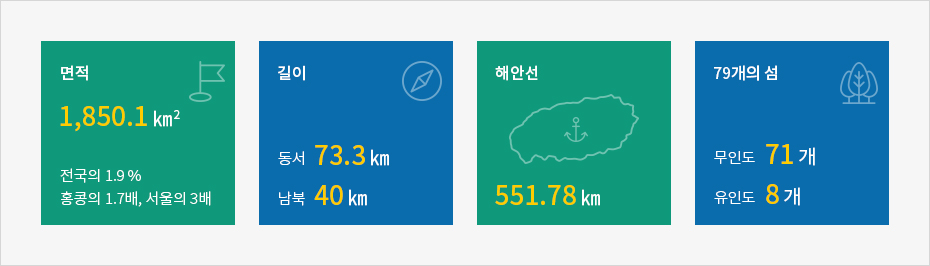
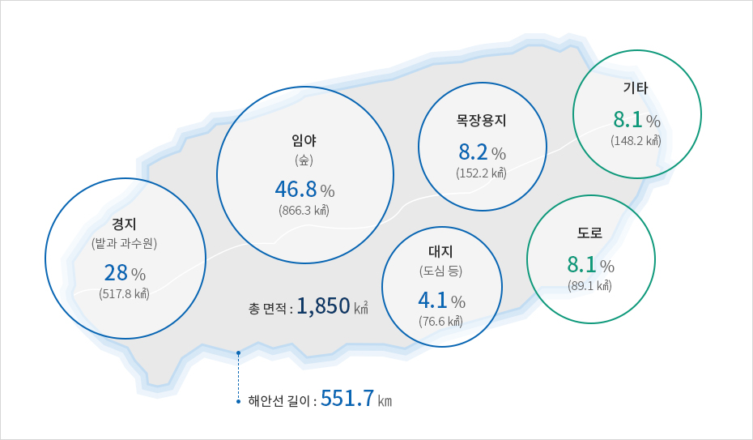

제주섬의 지리와 지질
- Home
- 일반현황
- 지리
- 제주섬의 지리와 지질
지형지질
섬 한가운데 우뚝 솟은 한라산을 중심으로 풍부한 동식물을 거느린 산림과 계곡, 오름과 분화구, 동굴과 초원 등 오밀조밀한 자연경관이 천혜의 아름다움을 빚어내고, 4면 바다로 둘러 싸여 있어 바닷가의 기암과 폭포, 백사장과 작은 섬으로 구성된 해안 일대가 절경을 이룹니다.


- 면적 16℃ - 전국의 1.9%, 홍콩의 1.7배, 서울의 3배
- 길이 - 동서 73.3㎞, 남북 40㎞
- 해안선 - 551.78㎞
- 79개의 섬 - 무인도 71개, 유인도 8개

섬의 중앙은 한라산을 중심으로 동서서면이 3~5 정도의 약한 급한 경사의 지형을 이루고 있습니다.
지질은 퇴적암 층과 현무암 등 화산암류, 단성화산에서 분출한 화산쇄설암 등으로 구성되며, 일부 지방의 점사질 토양을 제외하면 섬의 대부분이 흑갈색 화산회토로 덮여있습니다.
지목의 구성과 해안선
